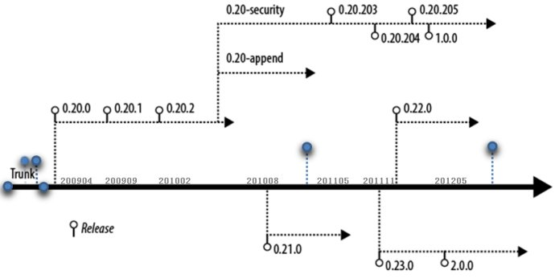

Hadoop

Hadoop
一个分布式系统基础架构，由Apache基金会开发。用户可以在不了解分布式底层细节的情况下，开发分布式程序。充分利用集群的威力高速运算和存储。Hadoop实现了一个分布式文件系统（Hadoop Distributed File System），简称HDFS。HDFS有着高容错性的特点，并且设计用来部署在低廉的（low-cost）硬件上。而且它提供高传输率（high throughput）来访问应用程序的数据，适合那些有着超大数据集（large data set）的应用程序。HDFS放宽了（relax）POSIX的要求（requirements）这样可以流的形式访问（streaming access）文件系统中的数据。
- HDFS: Google File System（GFS）的开源实现。
- MapReduce: Google MapReduce的开源实现。
- HBase™: A scalable, distributed database that supports structured data storage for large tables.
- ZooKeeper™: A high-performance coordination service for distributed applications.
- linuxidc Hadoop专题
- Hadoop官方文档中文版
- HBase官方文档中文版-颜开(译),0.90.4
-
HBase文档官方中文版-周海汉整理,0.95
- [https://code.google.com/p/hbasedoc-cn/ hbase 0.95 最新官方文档中文版]
- http://abloz.com/tag/hadoop
- hadoop-simple-monitor
- 信息收集
- 高可用性的HDFS-Hadoop分布式文件系统深度实践: http://book.51cto.com/art/201205/339029.htm
- hadoop/hbase高可用方案(厚积而薄发): http://blog.csdn.net/rzhzhz/article/category/948477/2
- chukwa,ganglia,nagios
-
hadoop硬件配置参考(Cloudera’s Support Team Shares Some Basic Hardware Recommendations)
- A good rule of thumb is to assume 1GB of namenode memory for every one million blocks stored in the distributed file system.
- http://blog.cloudera.com/blog/2010/03/clouderas-support-team-shares-some-basic-hardware-recommendations/
| Light Processing Configuration (1U/machine) | Two quad core CPUs, 8GB memory, and 4 disk drives (1TB or 2TB). Note that CPU-intensive work such as natural language processing involves loading large models into RAM before processing data and should be configured with 2GB RAM/core instead of 1GB RAM/core. |
| Balanced Compute Configuration (1U/machine) | Two quad core CPUs, 16 to 24GB memory, and 4 disk drives (1TB or 2TB) directly attached using the motherboard controller. These are often available as twins with two motherboards and 8 drives in a single 2U cabinet. |
| Storage Heavy Configuration (2U/machine) | Two quad core CPUs, 16 to 24GB memory, and 12 disk drives (1TB or 2TB). The power consumption for this type of machine starts around ~200W in idle state and can go as high as ~350W when active. |
| Compute Intensive Configuration (2U/machine) | Two quad core CPUs, 48-72GB memory, and 8 disk drives (1TB or 2TB). These are often used when a combination of large in-memory models and heavy reference data caching is required. |

| Feature | 0.20 | 0.21 | 0.22 | 0.23 | 1.0 | 2.0 | CDH3 | CDH4 |
|---|---|---|---|---|---|---|---|---|
| Production quality | √ | √ | √ | √ | ||||
| HDFS append | √ | √ | √ | √ | √ | √ | √ | |
| Kerberos security | √ [a] | √ | √ | √ | √ | √ | √ | |
| HDFS symlinks | √ | √ | √ | √ | √ | |||
| YARN (MRv2) | √ | √ | √ | |||||
| MRv1 daemons[b] | √ | √ | √ | √ | √ | √ | ||
| Namenode federation | √ | √ | √ | |||||
| Namenode HA | √ | √ | √ |
- a. Support for Kerberos-enabled HDFS only.
- b. All versions include support for the MRv1 APIs.
- HBase中Region的规划与硬盘配置分析(2011-12-25):http://www.linuxidc.com/Linux/2011-12/50232.htm
HBase在逻辑上的存储最小单位是Region，物理上来说事HFile。每个Region由多个HFile组成。那么，是否有一个推荐值，确定每台regionserver上运行多少个region，，每个region的size多大是最合适的呢？
看到《HBase权威指南》中有一段话写道：
It is noted in the Bigtablepaper that the aim is to keep the region count between 10 to 1000 per serverand each at roughly 100-200MB in size. This refers to the hardware in use in2006 (and earlier). For HBase and modern hardware, the number would be morelike 10 to 1000 regions per server, but each between 1GB to 2GB in size. But while the numbers haveincreased, the basic principle is the same: the number of regions per server,and their respective sizes, depends on what can be handled sufficiently by asingle server.
以目前主流服务器的能力计算，该文章给出了以下推荐值：每台regionserver管理10到1000个regions，每个region大小在1GB~2GB。对应于HBase-site.xml中的一个配置项为HBase.hregion.max.filesize。如果按推荐值计算每台regionserver管理的数据量最少可以到10*1GB=10GB，最大可以到1000*2GB=2TB。考虑到3份备份总数据量在6TB左右。通常来讲这里磁盘的配置就有两种方案。1、4块2TB的硬盘；2、12块500GB的硬盘。两种硬盘容量一样，后者硬盘块数增加，如果硬盘总线带宽够用，后一种能提供更大的吞吐率，更细粒度的磁盘冗余备份，更块的单盘故障恢复时间。
此外，关于硬件中硬盘的配置，对于Hadoop和HBase分布式应用来说，具有自己的特点。目前主流的服务器厂商都在主板上集成了raid卡，而raid对于hadoop，HBase应用来说是不必要的，官方推荐的是采用JBOD的方式来单独挂载每块硬盘。《hadoop权威指南》中写道：
HDFS集群没有采用RAID(冗余磁盘阵列)作为datanodes的存储设备(尽管namenode使用RAID来保护元数据不会丢失)。由于HDFS是采用在节点之间块复制的方法，所以RAID提供的冗余机制对HDFS来说是多余的。
此外，RAID条带(RAID 0)常用于增加性能，但却比HDFS中用到的JBOD(Just a Bunch Of Disks)要慢，而且JBOD在所有的磁盘之间对HDFS块进行时间片的轮转。具体说，RAID 0读写操作受限于冗余磁盘阵列中最慢的那个磁盘的速度。在JBOD中，磁盘的操作是独立的，所以读写操作的平均速度要大于最慢磁盘的速度。实际应用中，磁盘性能多是可以改变的，即使是同一型号的磁盘。在Yahoo Hadoop Cluster的Benchmark中，测试Gridmix显示JBOD要比RAID 0快10%，另一个测试显示快30%(这里的测试指的是HDFS的写能力。
最后，当一个JBOD配置中的一个磁盘失效，HDFS可以继续操作；但是在RAID中，一个磁盘的失效将会导致整个阵列(节点也一样)变得不再可用。
所以，如果今后有硬件厂家愿意生产JBOD配置的服务器作为云计算标配机器，那将是最好的选择。
HDFS
- HDFS_HA
- Hadoop_Backup_Node
- Cloudera_CDH3_CDH4
- Hadoop集群实践 之 (1) Hadoop(HDFS)搭建(CDH3): http://heylinux.com/archives/2002.html
- Hadoop版本升级(1.x): http://dongxicheng.org/mapreduce-nextgen/hadoop-upgrade-in-version-1/
- Hadoop版本升级(2.x): http://dongxicheng.org/mapreduce-nextgen/hadoop-upgrade-to-version-2/
- 使用FUSE-DFS mount HDFS:http://jiangbo.me/blog/2012/10/23/mount-hdfs-with-fuse-dfs/